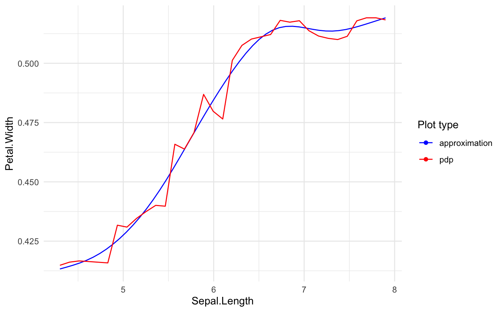

Builds predictive model based GLM.
The method provides main functionality on building GLM models with automatic variables transformation.
The transformations are based on specified single variable responses for selected black-box model.
See details in vignette("xspliner").
xspline(object, ...) model_surrogate_xspliner(object, ...) # S3 method for default xspline(object, lhs = NULL, response = NULL, predictors = NULL, data = NULL, form = "additive", bare = NULL, env = parent.frame(), ...) # S3 method for formula xspline(object, model, data = NULL, consider = "specials", env = parent.frame(), ...) # S3 method for explainer xspline(object, env = parent.frame(), ...)
Arguments
| object | Predictive model, formula or explainer (see DALEX2) object. |
|---|---|
| ... | Other arguments passed to |
| lhs | Left-hand side of model formula. Can be transformed response. |
| response | Name of response variable of |
| predictors | Predictor values that should be used in final model. |
| data | Training data of |
| form | Can be 'additive' (default) or 'multiplicative'. Specifies formula form in final model. |
| bare | Variable names that mustn't be transformed in final model. |
| env | Environment in which optional variables passed into parameters are stored. variables transformation. See vignette("xspliner") for details. |
| model | When |
| consider | One of |
Value
GLM object of class 'xspliner'.
Details
model_surrogate_xspliner is a wrapper of xspline method to assure consistency with https://github.com/ModelOriented/DrWhy tools
Examples
#>#>rf_iris <- randomForest( Petal.Width ~ Sepal.Length + Petal.Length + Species, data = iris) # formula based xspliner xs_iris <- xspline( Petal.Width ~ xs(Sepal.Length) + xs(Petal.Length) + xf(Species), model = rf_iris)#>#>summary(xs_iris)#> #> Call: #> glm(formula = Petal.Width ~ xs(Sepal.Length) + xs(Petal.Length) + #> xf(Species), family = family, data = data) #> #> Deviance Residuals: #> Min 1Q Median 3Q Max #> -0.67505 -0.07578 -0.02832 0.09440 0.47168 #> #> Coefficients: #> Estimate Std. Error t value Pr(>|t|) #> (Intercept) -1.53742 0.26581 -5.784 4.32e-08 *** #> xs(Sepal.Length) 0.33299 0.31384 1.061 0.2904 #> xs(Petal.Length) 1.85093 0.39227 4.719 5.54e-06 *** #> xf(Species)versicolor 0.08187 0.17949 0.456 0.6490 #> xf(Species)virginica 0.40787 0.23967 1.702 0.0909 . #> --- #> Signif. codes: 0 ‘***’ 0.001 ‘**’ 0.01 ‘*’ 0.05 ‘.’ 0.1 ‘ ’ 1 #> #> (Dispersion parameter for gaussian family taken to be 0.0310142) #> #> Null deviance: 86.5699 on 149 degrees of freedom #> Residual deviance: 4.4971 on 145 degrees of freedom #> AIC: -88.4 #> #> Number of Fisher Scoring iterations: 2 #># passing just the model xs_iris <- xspline(rf_iris)#>#>summary(xs_iris)#> #> Call: #> glm(formula = Petal.Width ~ xs(Sepal.Length) + xs(Petal.Length) + #> xf(Species), family = family, data = data) #> #> Deviance Residuals: #> Min 1Q Median 3Q Max #> -0.67505 -0.07578 -0.02832 0.09440 0.47168 #> #> Coefficients: #> Estimate Std. Error t value Pr(>|t|) #> (Intercept) -1.53742 0.26581 -5.784 4.32e-08 *** #> xs(Sepal.Length) 0.33299 0.31384 1.061 0.2904 #> xs(Petal.Length) 1.85093 0.39227 4.719 5.54e-06 *** #> xf(Species)versicolor 0.08187 0.17949 0.456 0.6490 #> xf(Species)virginica 0.40787 0.23967 1.702 0.0909 . #> --- #> Signif. codes: 0 ‘***’ 0.001 ‘**’ 0.01 ‘*’ 0.05 ‘.’ 0.1 ‘ ’ 1 #> #> (Dispersion parameter for gaussian family taken to be 0.0310142) #> #> Null deviance: 86.5699 on 149 degrees of freedom #> Residual deviance: 4.4971 on 145 degrees of freedom #> AIC: -88.4 #> #> Number of Fisher Scoring iterations: 2 #>#>#>#>summary(xs_iris)#> #> Call: #> glm(formula = Petal.Width ~ xs(Sepal.Length) + xs(Petal.Length) + #> xf(Species), family = family, data = data) #> #> Deviance Residuals: #> Min 1Q Median 3Q Max #> -0.67505 -0.07578 -0.02832 0.09440 0.47168 #> #> Coefficients: #> Estimate Std. Error t value Pr(>|t|) #> (Intercept) -1.53742 0.26581 -5.784 4.32e-08 *** #> xs(Sepal.Length) 0.33299 0.31384 1.061 0.2904 #> xs(Petal.Length) 1.85093 0.39227 4.719 5.54e-06 *** #> xf(Species)versicolor 0.08187 0.17949 0.456 0.6490 #> xf(Species)virginica 0.40787 0.23967 1.702 0.0909 . #> --- #> Signif. codes: 0 ‘***’ 0.001 ‘**’ 0.01 ‘*’ 0.05 ‘.’ 0.1 ‘ ’ 1 #> #> (Dispersion parameter for gaussian family taken to be 0.0310142) #> #> Null deviance: 86.5699 on 149 degrees of freedom #> Residual deviance: 4.4971 on 145 degrees of freedom #> AIC: -88.4 #> #> Number of Fisher Scoring iterations: 2 #>